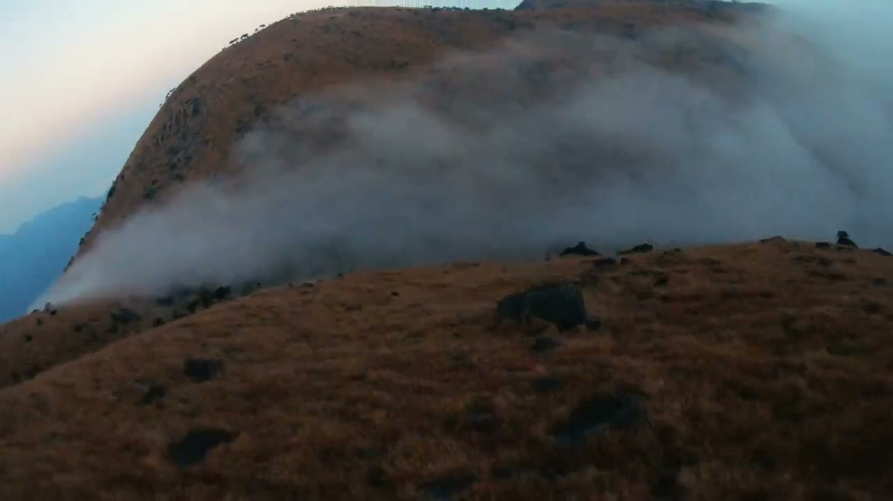
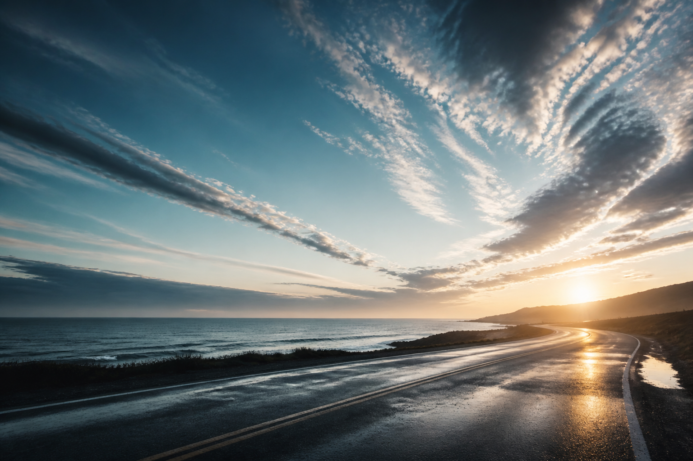

Observe
进入现场，记录人物状态、环境纹理和真实动机。
Flight Plan / 任务路径
我喜欢 NASA 影像里那种冷静、精密、辽阔的感觉：先把世界拉远，再重新看见每个具体的人、 每一次行动、每个现场里的光。这个网站现在也按这样的逻辑展开。
进入现场，记录人物状态、环境纹理和真实动机。
把素材整理成轨迹，找到故事向前推进的角度。
用剪辑、节奏和声音，把感受变成可分享的信号。
Selected Missions / 精选任务
这些项目来自旅行、校园、品牌现场与未发布影像。每个任务都由我完成全流程创作： 选题、策划、拍摄、剪辑和发布表达。

Mission 00 / Personal Film
一支关于风、路、身体和重新变宽的短片。自由不是一句话，而是一段把自己从狭窄里释放出来的轨迹。
Crew Profile / 创作者档案
我是 Niks，网络账号叫乌云向东。喜欢文学、音乐、运动、旅行，也喜欢和人交流。 做视频时，我会观察现场气味、人物状态、行动节奏，以及一个故事为什么会让人共情。
我的创作方法很直接：进入现场，发现问题，理顺情绪，推动它继续发生。 这也是“让生命流动起来”对我的意义。


Mission Data / 生命力档案
在账号运营和内容发布里，学习如何让真实内容被看见。
把“不知道怎么做”拆成可以推进的步骤，再让想法真的飞起来。
在运动现场里组织、沟通、解决临场问题，也捕捉人的能量。
把校园里的闲置资源重新连接起来，让一件小事继续流动。

Docking Request / 合作方向
我希望合作的品牌有地方气息、年轻人状态、运动感、旅行感或生活方式表达。 我可以承担前期策划、现场拍摄、剪辑、短视频内容与纪录感品牌短片。